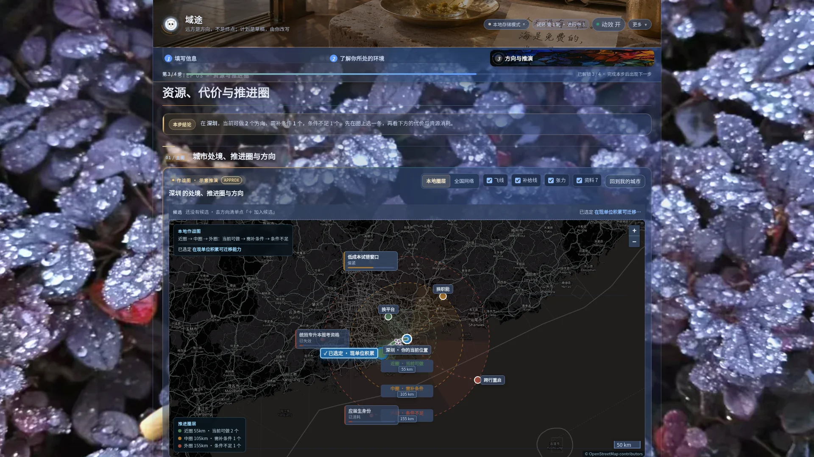

一句话：把此刻的处境、可选的下一步、要付的代价显影出来；不替你做决定。
| 我想做的事 | 去哪里 | 关键动作 |
|---|---|---|
| 第一次进入，先把自己的情况写清楚 | 第 1 步「填写信息」 | 选城市、年龄、身份，写一个方向 |
| 看看目标城市与真实讨论 | 第 2 步「了解你所处的环境」 | 点地图城市，切换「城市 / 讨论」 |
| 找当前阶段有哪些方向、哪些现在能做 | 第 3 步「方向清单」 | 看可行性标签，加入候选，二阶深挖 |
| 看一条方向要消耗什么、卡在哪 | 第 3 步「资源作战图」 | 点方向节点，读代价与张力 |
| 生成一份可保存的摘要 | 第 3 步「归属与摘要」 | 复制 Markdown，或下载 .md / .json |
| 领任务、做体验、复盘归档 | 第 4 步「成长闭环」 | 工作台 → 停靠驿站 → 归档 |
| 试一条 18 个月的人生路线 | 「更多 → 沙盘推演」 | 6 格各落一子，再采纳为计划 |
| 备份自己的数据 | 第 4 步「同伴经验域 → 数据」 | 下载完整备份 JSON |
| 看接口是否连通、是否离线 | 顶部数据状态胶囊 | 点开看逐项探测与「重新同步」 |
| 重看开篇、进入路演模式 | 顶部「更多」 | 「重看开篇」「路演模式」 |
全程不需要注册、不需要登录。个人数据默认按浏览器隔离；平台页面内会自动接入数据表，离线时自动退回本机存储。
| 它不做 | 原因 |
|---|---|
| 不输出「推荐 / 建议 / 最适合你」 | 选择权属于你；系统只呈现条件、差异与代价 |
| 不预测成功率，不判断某条路值不值得 | 没有人能替另一个人预判结果 |
| 不设排行榜、不打卡、不写逾期红字 | 不制造焦虑；暂停、修改、放弃都是合法选择 |
| 不把近似数据包装成精确结论 | 城市属性、相似度、资源存量均有明确的数据标注与边界说明 |
| 不替你修改处境 | 只有你明确选择「有一点变化」时，归档才会让向量小幅漂移 |
| 不保存你的账号或密码 | 没有账号体系；本机标识不含任何账号信息 |
prod 地址（发布后由平台生成）。建议使用近两年的 Chrome、Edge、Safari 或 Firefox。桌面端适合完整演示；手机端布局会自动收拢，触屏支持左右滑动切换步骤。
每次页面加载后的第一次进入，会播放约 8–9 秒的开篇：水束落下 → 涟漪铺开 → Voronoi 板块回正 → 「泻水置平地，各自东西南北流」逐字浮现 → 退潮显影。
?overture=1 每次刷新都播开篇；?demo=1 进入路演模式。| 区域 | 作用 |
|---|---|
| 左上角品牌与刘看山 | 点一下打开陪伴角色「刘看山」的陪谈面板 |
| 顶部数据状态胶囊 | 显示「平台数据表 x/x」或「本地存储模式」，点开可看逐项探测、重新同步 |
| 「闭环 第 N 轮」胶囊 | 有任务或档案后出现，点一下回到第 4 步 |
| 「动效 开 / 关」 | 一键关闭全部过渡与动画，适合低性能设备或需要安静阅读时 |
| 「更多」 | 数据来源与口径、知乎快照时间、沙盘推演、重看开篇、路演模式 |
| 两大板块 | 「我的处境」（第 1–3 步）与「我的成长」（第 4 步，需先解锁） |
| 四步步骤条 | 填写信息 → 了解你所处的环境 → 方向与推演 → 成长闭环 |
| 步骤解锁进度 | 显示已解锁到第几步；可以跳到已解锁的任意步骤 |
| 进度概览条 | 阶段、城市、方向、归属域、阶段性胜利、方向候选、七维指纹 |
← / → 切换已解锁步骤；未解锁的步骤会置灰。完成当前步的必要动作后，下一步才会出现。
目标：把「我是谁、我在哪、我现在的约束是什么」写成系统可读的处境。
页面顶部有「快速定位」：基本事实、结构化测量、校准量表、判定结果；点一下会平滑滚动到对应区块。
图 1 · 第 1 步：左侧填写，右侧实时给出阶段与判定依据。
| 字段 | 选项 / 输入 | 填写建议 |
|---|---|---|
| 常住城市 | 省级行政区分组下的 46 个样本城市 | 选你实际长期生活与找工作的城市；后续地图、岗位密度、讨论都按它计算 |
| 年龄 | 16–45 岁 | 影响阶段判定与年龄维度 |
| 城乡属性 | 主城区 / 近郊新区 / 下辖县镇 | 会轻微调整地理维度 |
| 当前身份 | 在校/待业、已工作 | 决定下一步文案与任务类型 |
| 所学专业 / 方向 | 自由文本 | 必填；写大类即可，例如「土木」「护理」「计算机」「电商运营」 |
方向为什么必填：第 3 步的检索、方向匹配与案例都依赖它。未命中内置大类时，系统会按关键词检索，并在界面标注「按关键词检索」，不会假装命中。
如果方向为空就点下一步，输入框会聚焦并抖动一下，提示「先写一个方向，哪怕只是一个大类」。
点开「结构化测量」，会看到五组事实与行为问题，约 2 分钟：
填写时右侧会实时预览；只有点「应用这组测量」后，分数才写入处境量表。界面会给出「填写质量」，但那只反映完整度与一致性，不是心理测量信度。
「校准量表」允许你手动拖动五个维度：经济压力、家庭负担、行业周期、认知惯性、体验历史。年龄在基本信息里选择，地理位置由你选择的城市与城乡属性导出，二者都不在这里自评。
右侧卡片给出：
阶段是启发式判定，不是身份证。它会随你填写的年龄、身份、体验历史变化；同一人在不同时间可能落在不同阶段。
方向已填写后，点「进入第二步：了解你所处的环境 →」。之后随时可以回来修改，已填内容不会丢。
目标：把你所在的城市、区域结构与真实讨论放在同一屏，先看清「地」，再谈「路」。
图 2 · 地图、蓝圈区域与右侧的城市 / 讨论页签。
给出当前城市的速览：
目标：把这一阶段的方向摊开，标出哪些现在能做、要补什么条件、会消耗什么，再决定先试哪一条。
第 3 步有三个视图，顶部常驻「我的候选」条：
图 3 · 方向清单：可行性标签、候选与三条操作入口。
点「选它 · 二阶深挖」会打开右侧抽屉：

图 4 · 本地圈层：近 / 中 / 外圈、方向节点、候选与资源仓。
这张图借用作战图的图层语言，但不设主攻目标、不给成功率、也不把任何人设为敌军。
图 5 · 归属域、稳定度、过渡带与一页纸摘要。
域途-一页纸.md；域途-我的数据.json，含阶段、档案、归属域、候选与胜利次数。摘要可以直接贴进笔记、作品说明或复盘文档；它不包含你的本机标识。
目标：把「选中的方向」变成一次真实体验，做完、复盘、归档，再决定下一轮。
图 6 · 闭环总览：当前站、完整六步、螺旋与指标。
| 顺序 | 站点 | 在哪里做 | 说明 |
|---|---|---|---|
| 1 | 领取任务 | 体验工作台 | 从当前域载入参考任务，或自己写一条 |
| 2 | 去体验 | 线下 | 把这条体验在真实生活里做一遍 |
| 3 | 标记完成 | 体验工作台 | 做完后标记「已完成」 |
| 4 | 停靠自省 | 停靠驿站 | 回答三个问题 |
| 5 | 归档 | 停靠驿站 | 归档为阶段性胜利；处境是否变化由你判断 |
| 6 | 回看落点 | 第 3 步 | 回到方向与推演，看归属有没有变化 |
当前步骤会展开操作入口；走完六步、归档之后，才会出现方向确认与下一轮。
Esc 退出。图 7 · 工作台：本轮任务、领取参考任务、自定义与状态切换。
关于「选择放弃」：它不是失败。首次把一条任务标为放弃时，系统会把这次尝试记进处境——体验历史 +2、认知惯性 −1，并明确提示。这是一次轻量的成长记录，不是惩罚。
图 8 · 驿站三步：拷问 → 回答三问 → 归档。
停靠分三步：
下一步怎么走（四者权重相同，没有哪一个更高级）：
| 选择 | 含义 |
|---|---|
| 维持方向 | 继续当前路线 |
| 修改计划 | 方向不变，换做法 |
| 暂时休整 | 不推送新任务；休息也是闭环的一部分 |
| 更换方向 | 排除也是胜利 |
这一轮之后，我的处境有变化吗：
经验卡：比整条复盘更轻。写一句「这段体验里可被他人复用的经验」（约 10 个字以上），点「提交经验卡到校验池」。它不改变向量，也不要求先完成整段体验；写入前会脱敏。
归档只针对已标记完成的体验。本轮没做完的任务会留在工作台，进入下一轮；每三轮年龄会自动 +1，这是时间事实，与是否成长无关。
胜利档案墙有三个内部视图：
点「成长画廊」可全屏铺开对比、曲线与完整时间轴。
同伴经验域分为三个视图：共建 / 我的 / 数据。顶部常驻「我的贡献」卡：已提交复盘、公共节点、累计有效标记、平均校验进度，以及你参与的讨论数与收到的回复数；它只做自己的进度显示，不排名。
| 操作 | 位置 | 影响 |
|---|---|---|
| 重新填写 | 第 4 步底部 | 回到第 1 步，重置本次浏览中的任务、档案与校验池视图；本机快照重置，本机标识保留；平台记录不删除 |
| 清空本机历史数据 | 同伴经验域 → 数据 | 清空本机全部历史并生成新的本机标识；平台旧记录不删除，但不会再加载到这台设备 |
目标：在不改动真实处境的前提下，把未来 18 个月摆上桌面，看看一条路线会把你带到哪。
图 9 · 沙盘：6 格 × 第一季度，右侧落子，底部结果对照。
#/sandbox。沙盘与主流程共用同一份数据：它读取你的处境、阶段与归属，但不修改真实处境与档案。
预设动作有 6 个：
| 动作 | 说明 | 现金 / 精力 |
|---|---|---|
| 小步试水 | 用一次最小验证换真实反馈 | −6 / −8 |
| 集中深练 | 把一块能力练到能独立出活 | −12 / −14 |
| 向外拓展 | 换城或扩到更大的圈层 | −16 / −10 |
| 借力加速 | 用兼职、跳槽或预算换时间 | +9 / −16 |
| 停靠休整 | 恢复精力，把这一段写下来 | +6 / +16 |
| 收束定盘 | 停止摇摆，把方向拆成小目标 | −8 / −9 |
正数表示该动作会补充对应余量，负数表示消耗；具体以界面显示为准。
自定义的路：
每一步都可以「撤回这一步」；顶部「重新摆放」可整体清空。
点左上角品牌图标，会打开陪伴角色「刘看山」：
| 场景 | 存储位置 | 说明 |
|---|---|---|
| 在平台页面内使用 | 平台数据表 | 通过 POST /api/page/w/{token} 调用工作流；本机标识做用户隔离 |
| 平台不可用 / 公网兜底版 | 浏览器 localStorage | 主流程可完整走完；页面顶部显示「本地存储模式」 |
| 写入失败 | 先写本机 | 界面提示稍后重试；不会丢掉刚写的内容 |
ownerKey 隔离；换设备、换浏览器不会自动合并数据。以下内容在写入平台前会做脱敏：
脱敏不能保证 100% 识别所有敏感信息，请不要主动填写身份证号、银行卡号、精确住址、他人隐私。
超过 30 天没有新的体验归档，进入闭环时会应用一次小幅衰减：体验历史回落、认知惯性向稳健一端漂移，最多累计 3 次；页面顶部会明确提示「已按 N 天未活跃小幅衰减」。这是对「长时间不行动」的温和显影，不是惩罚。
| 操作 | 效果 |
|---|---|
← / → | 切换已解锁步骤 |
| 触屏左右滑动 | 切换步骤；侧栏内部滑动只切换页签，不翻整页 |
Esc | 退出聚焦模式、关闭抽屉或弹层 |
| Tab | 正常键盘导航；开篇播放时保留 Tab 给键盘用户 |
| 任意键（开篇中） | 跳过开篇；焦点在按钮上时不抢键 |
| 「动效 关」 | 关闭全部过渡与动画 |
| 系统「减弱动效」 | 自动减少动画与平滑滚动 |
| 时间 | 画面 | 操作 | 讲解要点 |
|---|---|---|---|
| 0:00–0:20 | 开篇 | 不操作，让它播完；或点「跳过」 | 「泻水置平地，各自东西南北流」；每个人被放到地上，会流向不同方向 |
| 0:20–1:10 | 第 1 步 | 选深圳 / 27 岁 / 已工作 / 土木工程；展开结构化测量并应用 | 系统不判断该不该转，只把处境写成七维 |
| 1:10–1:50 | 第 2 步 | 点地图，切「城市 / 讨论」 | 蓝圈是影响范围；讨论来自知乎真实快照 |
| 1:50–2:50 | 第 3 步 | 选一条「当前可做」，加入候选，二阶深挖；切作战图看代价 | 可行性三档、资源消耗、张力；不给成功率 |
| 2:50–3:50 | 第 4 步 | 领取任务 → 标记完成 → 驿站三问 → 选「维持方向」→ 归档 | 闭环不是打卡；成长不一定立刻改变处境 |
| 3:50–4:20 | 同伴经验域 | 提交复盘、标记有效、发一条讨论 | ≥3 个有效标记升级公共节点；自己的复盘不参与自己的归属 |
| 4:20–4:50 | 沙盘 | 走两格 → 采纳为计划 | 18 个月、无随机、不改真实处境 |
| 4:50–5:00 | 更多 | 打开「数据来源与口径」 | 五级来源标签与缺口登记，数据诚实 |
演示时统一说「它把……摆出来」「你可以看到」，避免说「系统建议你走这条路」。
Q1：为什么一打开就显示「示例值」？
A：那说明你还没真正填写第 1 步，系统把默认模板标出来，避免把演示数据当成你的结论。填写任意字段后，「示例值」会消失，右侧才开始判定。
Q2：为什么点「进入第二步」没有反应？
A：方向为空。至少写一个大类，例如「土木」「护理」「计算机」；输入框会聚焦并提示。
Q3：阶段是怎么判定的？会不会不准？
A：阶段由年龄、身份与体验历史做启发式判定，不是心理测评。它会随填写变化；同一人在不同时间可能落在不同阶段。它的用途是决定展示哪一批方向与任务，不是给你贴标签。
Q4：为什么方向只有几条，或者没有「当前可做」？
A：方向清单只展示当前阶段的方向；可行性由城市岗位密度、经济压力、家庭负担、年龄与体验历史共同推导。若「当前可做」为空，说明约束较紧，可以先从「需补条件」里挑成本最低的一条。
Q5：为什么系统不告诉我该选哪条？
A：这是产品原则。它只呈现条件、差异与代价；选择权属于你。你可以在候选里比较，在沙盘里试走，但系统不会输出「推荐」。
Q6：我的数据存在哪？换设备会同步吗？
A：平台页面内写入平台数据表；平台不可用时存在当前浏览器。没有账号体系，换设备或换浏览器不会自动合并。可在「同伴经验域 → 数据」下载备份。
Q7：为什么同伴经验域是空的？
A：两种可能：一是你用的是公网兜底版或后端不可用，跨用户内容会降级为空；二是平台上还没有其他用户提交复盘。先完成一次归档并提交复盘，你自己的内容会出现在「我的」。
Q8：我提交的复盘为什么别人看不到？
A：提交后初始在「校验池」，只有本人可见；满 3 个不同用户标记有效后才升级为公共节点。没有有效内容的记录不会进入校验池。
Q9：我给复盘点了「标记为有效」，为什么按钮变灰了？
A：同一条复盘每个用户只能标记一次；已标记会显示「已标记」。离线时标记只保存在本机。
Q10：归档之后还能改吗？
A：归档记录本身不提供编辑；你可以在下一轮重新填写、调整方向与任务。已归档的胜利与历史任务不会因为重新填写而丢失。
Q11：为什么我选的「放弃」改变了处境？
A：首次把任务标为放弃，系统会把这次尝试记进处境（体验历史 +2、认知惯性 −1），并明确提示。它不是惩罚，而是承认「这条路你至少试过了」。重复标记不会重复扣减。
Q12：为什么过一段时间回来，分数变了？
A：超过 30 天没有新的归档，会应用一次小幅不活跃衰减（最多 3 次），页面顶部会提示原因。
Q13：我想重新开始，会删掉平台数据吗？
A：「重新填写」只重置本机当前视图与快照，平台记录不删除；「清空本机历史数据」会清空本机并生成新的本机标识，平台旧记录仍保留但不会再加载到这台设备。
Q14：沙盘会改我的真实处境吗？
A：不会。沙盘只读取处境做推演；「采纳为计划」只生成体验任务，不修改处境与档案。
Q15：一页纸摘要包含隐私吗？
A：摘要包含阶段、处境、归属域、候选与胜利次数，不包含本机标识、账号或联系方式。分享前仍建议自己通读一遍。
| 术语 | 含义 |
|---|---|
| 阶段 | 在校探索期、初入职场期、转向抉择期、稳态深耕期；由年龄、身份与体验历史启发式判定 |
| 七维 | 地理位置、经济压力、家庭负担、年龄、行业周期、认知惯性、体验历史 |
| 归属域 | 七维相似度路由出的当前域，不是分类标签，也不是命运 |
| 接近度 | 与归属域的相似程度，用区间表达，不是精确概率 |
| 稳定度 | 与第二名的差距；分为几档，用于说明归属是否清晰 |
| 过渡带 | 与第一名接近的邻近域集合 |
| 候选 | 你暂时放入对比条的方向，最多 4 条 |
| 可行性三档 | 当前可做 / 需补条件 / 条件不足 |
| 一次性资源 | 用掉或过期不可逆的资源，如应届生身份、统招专升本报考资格、低成本试错窗口 |
| 阶段性胜利 | 在当前处境下完整走通一轮体验学习循环：完成体验、做出反思、形成对下一步有效的判断 |
| 校验池 | 你提交但尚未达到公共节点阈值的复盘集合 |
| 公共节点 | 满 3 个不同用户标记有效的复盘，进入知识网络供他人参考 |
| 有效标记 | 同处境用户对复盘点「标记为有效」，每人每条一次 |
| 经验卡 | 比完整复盘更轻的一句经验，同样进入校验池 |
| SET | 处境 S → 试验 → 迁移 T 的读法；第 3 步摘要按此组织 |
| 降级 | 后端不可用时自动退回本机存储；主流程仍可走完 |
docs/PHILOSOPHY.mddocs/域途-产品说明计划书.mddocs/DATA-SOURCES.mddocs/ASSET-LICENSES.md.project.md本说明书描述的是当前版本的实际行为。若界面与本文不一致，以产品内提示与最新代码为准；涉及数据口径的争议，以
.project.md与docs/DATA-SOURCES.md为准。
域途 · 远方是方向，不是终点；计划是草稿，由你改写。